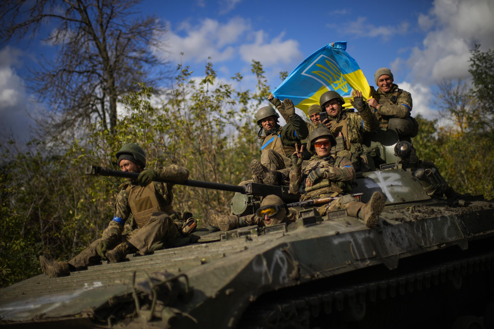
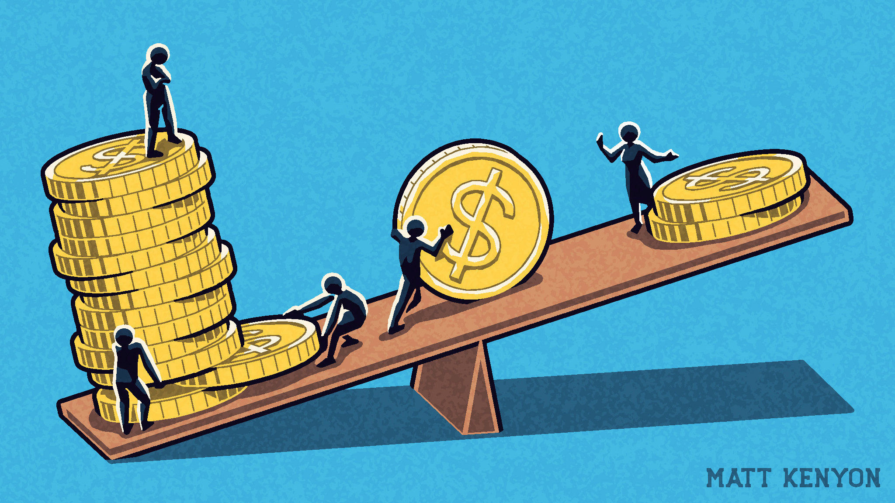

Major Problems around the World
This page will cover the three largest problems facing
our society today, whether natural or man-made.
#1: War in Ukraine

There is no doubt that the current war in Ukraine is one of the largest, if not the largest
worldwide issue right now. On one side is Ukraine and the West, who seek to counter Russia's influence
in Eastern Europe, and on the other side is Russia, who wants to expand its control over the former
territory of the Soviet Union. After 7 months of harsh fighting, thousands of soldiers and civilians have
died, with millions more displaced from their homes and forced to flee the country. Tension continues
to build as Russia continues its aggression while the West tries to support Ukraine as much as possible
without getting directly involved. The frontlines are in deadlock, with only limited offensives taking
place. The conflict has also caused a severe decline in economic activity, especially in Eastern Europe
where millions of Ukranian refugees are sheltering in neighboring countries like Poland and Romania.
The West has also considerably increased their military presence in the area, and Russia continues to
threaten them with weapons of mass destruction.
#2: Climate Change

While the War in Ukraine has caused a great loss of life, it pales in comparison to the force of
Mother Nature. Typhoons able to uproot houses from their foundations, tsunamis flooding entire coastlines,
and volcanic eruptions covering kilometers upon kilometers of land with dust and ash. It is clear that
humanity is at the mercy of the planet we live on, with no way to stop natural disasters. However,
unbeknownst to us we are contributing to the death of humans and many other life forms on Earth due
to pollution and our current way of life. It is important we change how we treat our planet, as our
actions may come back one day to bite us. We should remember that right now Earth is our only home,
and we have the capability to right our wrongs and fix the planet before it is too late.
#3: Poverty and Financial Inequality

In our modern day and age, communication is only a click away and we are connected more than ever.
However, it seems that every year that passes we get separated not by mountains, oceans, or canyons.
This is a financial gap, and it's getting wider and wider due to many reasons:
Income Inequality
Differences in income and salary greatly contribute to financial inequality. In extreme cases,
higher-ups earn more in a week than what their employees can earn in a year.
Tax Inequality
Tax is the money collected by a government from its people so as to fund the government's
projects and programs. But taxes may be higher or lower for certain groups within the country.
In the worst cases of Tax Inequality, the rich are taxed the least while the poor taxed the most.
This, paired with income inequality can effectively widen the gap between rich and poor.
Employment Inequality
Most people in the lower class tend to reach only highschool-level and college-level education
due to their lack of money, while richer people generally have better chances of finishing
college and university. This means that after graduating, most lower class graduates work in
minimum-wage jobs, since they are underqualified for better-paying ones. Richer people with
better education go on to work in high-pay jobs such as in companies or services. This serves
as a barrier for poor people to lift their way out of poverty in many countries.
Links:
Go Back to Main Page